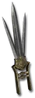

Set - Heyday
Path of the Vortex
2 items, level 58, Assassin

Maelstrom Talon
Scissors Suwayyah
Damage: 40-51
Required Level: 58
+350-450% Enhanced Weapon Damage
+15-25% Increased Attack Speed
+50-100% Damage to Undead
10% chance to cast level 15 Static Field on attack
+40% Faster Block Rate
+40% Faster Run/Walk Speed
+50% Extra Gold from Monsters
Vortex Talon
Scissors Suwayyah
Damage: 40-51
Required Level: 58
+350-450% Enhanced Weapon Damage
+15-25% Increased Attack Speed
+50-100% Damage to Demons
+25% Chance of Open Wounds
+15-20% Life stolen per hit
+15-20% Mana stolen per hit
+250 to Attack Rating
+5% to Dexterity
(2 items) +10 to Whirlwind
Full set
- +8 to Melee Mastery
- +8 to Claw Mastery
- +25% Chance of Crushing Blow
- Adds 250 Damage
- Adds 250 Lightning Damage
- Adds 250 Fire Damage
- Adds 250 Cold Damage